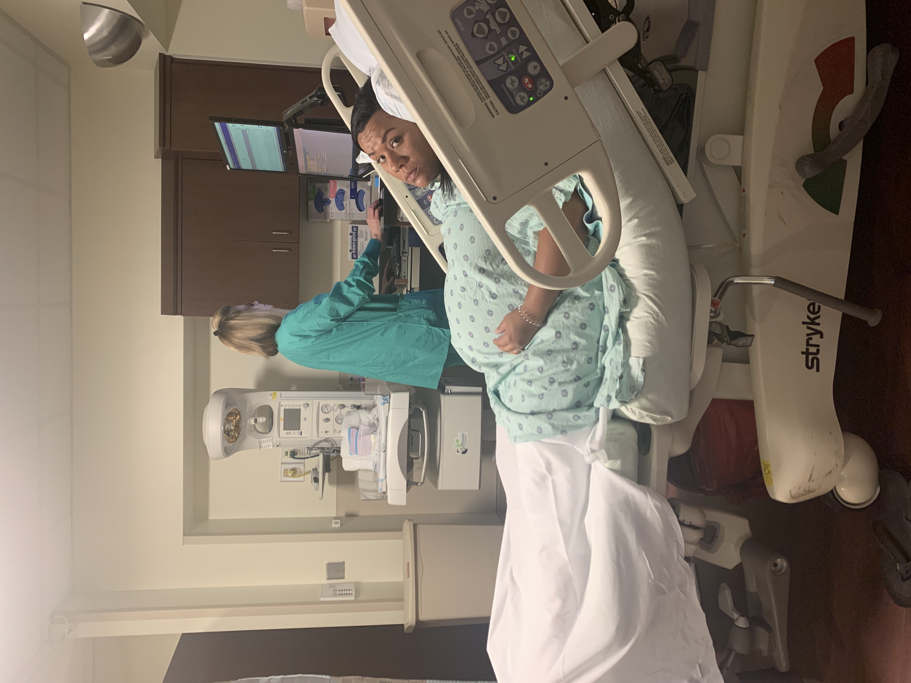
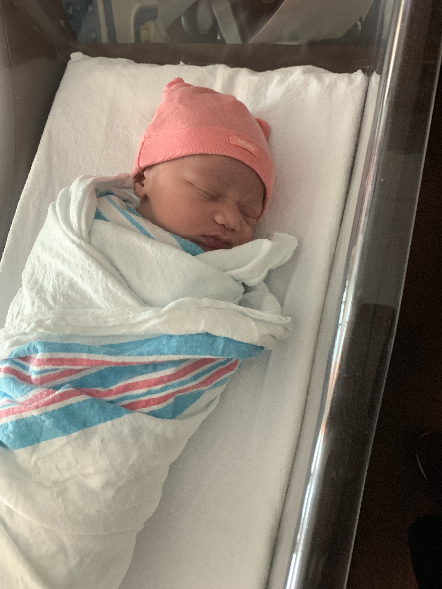
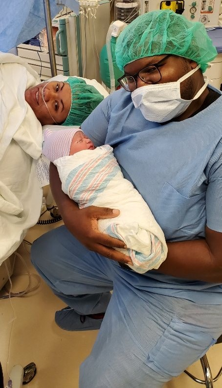

"Why is it wrong?!" I shouted to my friend, Chelsey. It was around 9:30pm on November 15, 2018. We were working on some homework for our online HTML/CSS class, and I could not understand why my test answers were coming back 'incorrect.' But what Chelsey couldn't understand is why I was so upset about it. She suggested that I was either nearing my "time of the month" or that I was pregnant. I shrugged it off because I had just taken a pregnancy test 2 days prior. But to prove to Chelsey that I was not with child, I decided to take another test and show her the results.
So, off I went to get the test answers that I was actually sure about. I called Chelsey in to come see the single line appear with me. And that's when it happened. Two lines, not one. "Is it supposed to look like that?" Chelsey asked. "Wait..." I said, in disbelief. I quickly pulled out another test. Positive. So then it was time to pull out the most reliable test: Clear Blue. And, yet again, the results were positive. "Babe! I think I'm pregnant!" I shouted through the house to my husband, Derek. He responded, "Okay," with a smile. I remember instantly feeling very fragile - afraid to do anything that could cause this little life inside me to suddenly stop growing. There began my everyday battle to trust God with the life of the child within me. I knew that God gave this little one to us. I believed that He was forming her inward parts and knitting her together in my womb (Psalm 139:13) But it was easier for me to believe that something awful was going to happen (I tend to think of all the worst case scenarios).

Thankfully, nothing awful happened. I actually had a very smooth pregnancy. We found
out in March that we were expecting a little girl.
My mom was more excited than anyone, as evidenced by the photo to your right. This came as a huge
surprise to us all,
because I come from a family of mostly boys. I am one of five children and the other four are boys.
So,
I was certain that I was also carrying
yet another grandson. But boy or girl really didn't matter to us. We were
just excited to meet this little
person.

Fast forward to 41 weeks! That's right - I went past my due date, despite asking this little babe to
come
a little early. After all, pregnancy
is not the most comfortable experience. But for her, she was comfortable exactly where she was.
So
comfortable that she would not
make her debut without a little help from the doctors and nurses at Advent Health. 41 weeks and one
day is when I walked through
the hospital doors on that Thursday evening to be induced, certain that we'd be meeting our little
girl
within just a few hours.
I was nervous about being induced because I knew it increased the chances of needing a c-section - which I had decided I was not having. I'd heard recent statistics about women of color dying after giving birth because they weren't taken seriously, and I didn't want to increase the likelihood of something like that happening to me. About 12 hours after the induction, I still had not made much progress. So, they tried a different method to get things going. I was experiencing contractions all day long on Friday, but I was able to breathe through the pain and spent my day walking around the hospital floor. I walked the hospital hallways for what seemed like 100 times. Eventually, I had progressed enough for the nurses to start me on pitocin (also known as the worst drug on the face of the planet). That kicked things up a notch and my water broke after about an hour. "She's definitely coming tonight," I thought.
Several painful hours later, I was told that the baby was positioned the wrong way. They would try
to
get
her to turn,
but the way she was positioned was going to make it more difficult for her to be delivered
naturally.
They told
me that if she
didn't turn, we'd have to consider "other options." But I knew exactly what that meant: a c-section.
Around
7am on Saturday morning,
the midwives let me know they were recommending a c-section for the baby's safety and mine. The one
thing
I didn't want to happen
was happening. I was devastated. But one thing helped me. As I prepared to go into surgery, I
remembered
a verse from a Psalm
I'd read the morning I
went to the hospital:
As I remembered that psalm, I was immediately encouraged to trust God with my life once again as I went in for the surgery I feared could end my life. This was not the first time that God was calling me to trust Him with my life. The first time was the summer of 2008. I had been learning about Him through a campus ministry at USF called the Navigators. I had grown up hearing that Jesus Christ died for sinners, but I never understood how that affected me or why He had to do that for me. I had never asked Him to die for me, after all. But that year I understood for the first time that my sin separated me from God because He is holy - meaning He is set apart and perfectly sinless. I learned that Jesus is the Son of God - 100% God and 100% man - and that He lived a perfect, sinless life. He offered His perfect life as a sacrifice for all those who would put their trust in Him. It was a substitution, a great exchange: His perfect life for my sinful life. I finally understood why I needed a Savior and what Christ had done for me. So, the only appropriate response was to turn from my sin and believe the Gospel (the good news). This good news changed the course of my life at the age of 18. I am thankful for God's intervention then and also on the day of Maya's birth. My life is a series of moments that God is using to teach me over and over again to put my trust and my hope in Him. And I think the birth of my daughter may have been the most challenging moment yet. But thankfully, God helped me that day.


At 9:43am on Saturday, July 27th, Maya Elise Webb entered the world. We made it through the surgery
with
no
complications. God reminded me that I am not in
control of my life - but He is.
He holds my life in His hands, and that is the safest place I can be. I didn't realize how much my
life
would
be changed by this tiny person - I still don't think I realize it entirely. She has brought us so
much
joy and
has helped me to understand more about God and the way He views His children. The Bible says that
God
rejoices over
His people with loud singing and that He delights in them (Zephaniah 3:17,
Isaiah 62:4).
It's
unfathomable to me that
the same way that I delight in Maya, the Lord delights in me - all because He sees me in light of
Jesus'
sacrifice for me.

Motherhood has many challenges, but I'm so thankful that I get to be Maya's mom. We were not sure if
we
would be able
to have children because of a medical condition I have, so the fact that she's here makes me so
grateful. I'm excited
to watch her grow up and see who she becomes. But until then, I'll be enjoying all the little
moments
and trying to trust
God with her life, too.